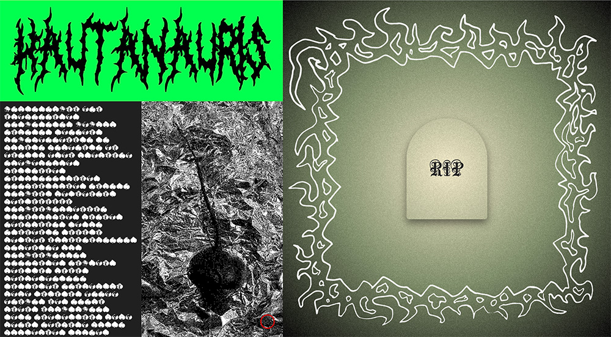

Kävimme keskiviikkona läpi gridin ja flexin käyttöä, jotka tuli tosi hyödylliseen väliin! Olin alkanut sommittelemaan sivuani jo, ja tehnyt sen ihan hupsulla tavalla, joten tästä oli tosi paljon apua samantien. Flexin toimintaperiaatteet jäivät ehkä enemmän vielä mysteeriksi, sillä gridiä käytin heti sivuni sommittelussa ja se ehkä tuntuikin hiukan selkeämmältä hahmoittaa. Viime viikosta oppineena hahmottelin sivuani muutamaan otteeseen paperille ja sain sen loksahtamaan paremmin paikalleen, kuin aiemmin. Päädyin siihen, että jakaisin sivun ns. kahtia ja vas. puolella olisi otsikko, kuva nauriista ja infotekstiä aiheesta ja oik. puolella itse ”hauta”. Sain rakennettua gridin hahmotelmieni perusteella ja olen siihen tyytyväinen! Alkuun ajattelin, että sivu toimisi vielä niin, että vas puoli pysyisi paikallaan ja oik puoli olisi scrollattava, niin, että siinä niin ikään scrollaamalla kaivauduttaisiin syvemmälle naurishautaan. Sainkin sivun alkuun rakennettua näin, mutta tuntuu, että olin tämän sommitelman kanssa aika jumissa, enkä oikeen keksinyt millaista sisältöä sisällyttäisin siihen nauriiden lisäksi. Viime viikkoinen ideani myös sivulta pois linkkaamiselle alkoi tuntua jotenkin irralliselta tai en oikein keksinyt mitään järkevää ratkaisua siihen, mihin linkit veisivät. Sain nämä ongelmat ratkaistua peruuttamalla hiukan takaisinpäin ja keksimällä, että ”syvemmälle kaivautumisen” haudassa voisikin kuvasta niin, että oik. puolella olisi hautakiven muotoinen painike, jota klikkamalla taustakuvan gradient muuttuisi tummemmaksi ja tummemmaksi kuvastaen syvemmälle menemistä. Kun linkkiä olisi tarpeeksi klikkaillut, paljastuisivat onkalosta nauriit, joita klikkaamalla kuulisi osia ai-metallibiisistä. Sain tämän toteutettua viime viikolla siihen pisteeseen, että lopusta puuttuvat enää vain nauriit, joihin täytyy yhdistää itse musiikkitiedostot!
Estetiikan kannalta löysin verkosta ihan siistin hevimäisen fontin, jolla toteutin vas. puolella olevan otsikon. Sen lisäksi hommasin nauriin ja puuhasin siitä kotona leimasimen avulla mustia painojälkiä, joista keksin toteuttaa naurisfontin. Ajattelin, että tällä vaikeasti luettavalla fontilla voisi toteuttaa vas. puolen infotekstiosuuden, jotta sivu vaikuttaisi mahdollisimman hämyiseltä! Sen lisäksi otin tästä nauriista muutaman kuvan mustaksi maalattuna foliota vasten ja siitä sai bitmapiksi muuntamalla aika hienon kuvan infotekstin viereen. Alan olemaan sivun ulkonäköön suht tyytyväinen ja musta oli kiva yhdistää verkkosivuun myös tämmöstä kotikutosta käsintekemistä, joka ei välttämättä ole kovin perinteinen tapa verkkosivujen työstössä.
